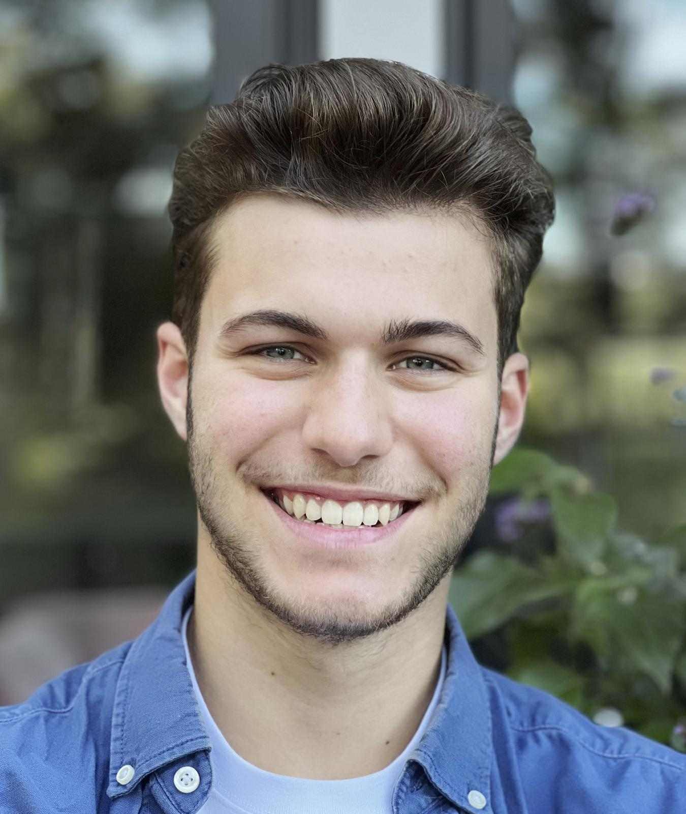

CT
CTO (Anandhu Sunos)
Leads autonomy stack, ROS architecture, SLAM, navigation, arm motion planning, and system integration for ZERA platform.
Current Team
CE
CEO (Vivek Thankachan)
Co-leads engineering with focus on controls, integration, testing infrastructure, and engineering operations.
Current Team
+
Senior Robotics Engineer
Works with CTO on perception, planning, SLAM refinement, and arm control scaling. Critical for production readiness.
Hiring - Immediate
Engineering Strategy: CTO + 1 senior engineer provides sufficient technical depth for single-product focus (ZERA). Emphasis on reliability, safety testing, and field validation before scaling.
Muhammed Abnas
Web & app development, UI/UX for fleet management, teleoperation dashboard, and customer-facing applications.
Part-time
+
Full-time Software Engineer
Fleet backend development, API integration, real-time telemetry, remote diagnostics, and app feature expansion.
Hiring - Near-term
Software Focus: Building robust fleet management platform, teleoperation interface, and customer dashboards. Integration with ROS backend and cloud infrastructure.
Amal M Ashok, CPO
Leads product roadmap, hardware design strategy, prototyping cycles, and manufacturing readiness.
Current Team

Maximillian Gruber
Mechanical design lead, CAD modeling, prototype development, and hardware iteration cycles.
Part-time
+
Hardware Designer Intern
Additional design bandwidth for subsystems, fixtures, and manufacturing tooling development.
Hiring - Near-term
Design Philosophy: Iterative design cycles with rapid prototyping. Focus on manufacturability, reliability, and field serviceability for hospital environments.
A1
Assembly Technician I
Lead assembly specialist - handles primary unit assembly, test fixture operation, and quality checks for production units.
Hiring
A2
Assembly Technician II
Secondary assembly specialist - supports assembly operations, BOM management, and pre-deployment hardware verification.
Hiring
+
QA & Test Engineer
Reliability testing, field test protocols, regression test suites, safety validation, and quality standards enforcement.
Hiring - Immediate
Manufacturing Goal: Establish repeatable assembly process for 20-50 units. Implement rigorous QA before field deployment. Scale supply chain as demand increases.
+
Deployment / Site Engineer
Coordinates hospital partnerships, manages site readiness assessments, oversees installations, and handles go-live processes across deployment locations.
Hiring - Priority
FT1
Field Technician I
Primary field support - monitors deployment operations, provides remote assistance, troubleshooting, and coordinates maintenance activities.
Hiring
FT2
Field Technician II
Secondary field support - backup monitoring, teleoperation coverage, system diagnostics, and customer technical support.
Hiring
A1
Assembly Techs (Deployment Support)
On-site assembly support, hardware QA before shipping, and installation assistance for complex deployments.
Shared Resource
Deployment Coverage: Initial target: 3+ countries. As volume grows, add supply chain/procurement specialist and regional field service engineers per major region.
CE
CEO (Vivek Thankachan)
Oversees financial strategy, fundraising, legal compliance, and corporate governance.
Lead
FA
Fractional Attorney
Legal counsel for corporate matters, contracts, intellectual property, regulatory compliance, and employment law.
Current Resource
+
CPA (Certified Public Accountant)
Financial reporting, tax planning, audit preparation, accounting systems, and regulatory compliance.
Hiring - Near-term
+
Fractional CFO
Financial planning & analysis, investor reporting, budgeting, cash flow management, and fundraising support.
Hiring - Near-term
Financial Structure: Fractional/part-time resources provide cost-effective expertise during early stage. Transition to full-time CFO as company scales post-Series A.
+
R&D Engineer
Explores next-generation capabilities, advanced autonomy features, new use cases, and technology partnerships.
Future Hire
+
Electronics & Embedded Systems
Custom PCB design, sensor integration, embedded firmware, and hardware optimization for cost and performance.
Future Hire
Innovation Pipeline: R&D initiatives begin post-Series A. Focus areas include advanced perception, multi-robot coordination, and hospital workflow optimization.